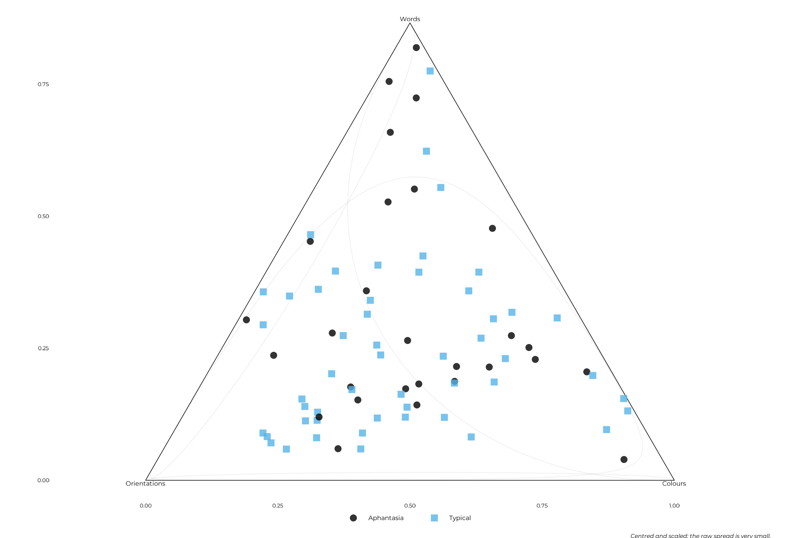

Composition: how effort is divided, independently of how much there is
composition.RmdTwo participants can score the same overall and have divided their effort completely differently. This page is about that difference: relative allocation across the three features, with overall performance removed.
This is the study’s primary analysis, and the one it was designed around. A composition is a different object from an accuracy score, with its own geometry, and it answers the question the task was built to ask: not how well, but where.
It is also where the strands meet. Imagery vividness, inner experience and participants’ own accounts of what they were doing all bear on the same coordinate, in sections 4 to 6.
Everything here is v1 (version scope) and uses responded items only, which carries a caveat set out in section 8.
v1 <- get_data("v1") |>
dplyr::filter(grepl("^expe_block", expe_phase))
participant_info <- v1 |>
dplyr::summarise(
vviq = dplyr::first(vviq_total_score),
imagery_group = dplyr::first(vviq_group_2),
parity_rate = (sum(responded_parity_1) + sum(responded_parity_2)) /
(2 * dplyr::n()),
.by = id
)
# Every participant with all three parts, and the subset clearing the
# engagement thresholds of the task validity page.
all_parts <- compose_features(v1, id) |>
dplyr::filter(stats::complete.cases(dplyr::pick(tidyselect::everything())))
engaged_parts <- dplyr::filter(all_parts, id %in% engaged_ids(v1))
add_coordinates <- function(parts) {
parts |>
dplyr::bind_cols(
ilr_coords(dplyr::select(parts, tidyselect::starts_with("part_")))
) |>
dplyr::left_join(participant_info, by = "id") |>
dplyr::mutate(
complete_aphant = factor(
dplyr::if_else(vviq == 16, "floor", "above_floor"),
levels = c("above_floor", "floor")
)
)
}
# Three frames, named separately rather than one object reassigned. Each
# section states which it uses, and each is the frame the corresponding
# script fitted on. A single reassigned `model_data` is how a page ends up
# describing one sample and displaying another.
#
# Section 6 needs a composition and a strategy report and nothing else, so
# it keeps every engaged participant, with or without a vividness score.
# `inst/scripts/14-strategy-convergence.R` does the same, deliberately.
reported <- add_coordinates(engaged_parts)
# Sections 4, 7 and 8 additionally need vividness. This is the frame
# `inst/scripts/11-compositional-analysis.R` fits `comp-floor` on.
model_data <- dplyr::filter(reported, !is.na(vviq))
# Section 5 additionally needs the questionnaire scales. Standardised
# because the instruments sit on incompatible ranges (OSIVQ runs 1-5,
# NIEQ 0-100) -- and standardised **after** the join, on the participants
# who enter that model, exactly as
# `inst/scripts/15-allocation-and-style.R` does. A z-score computed on a
# different sample is a different predictor.
style_data <- model_data |>
dplyr::inner_join(
questionnaire_scales(all_data) |>
dplyr::select(id, tidyselect::starts_with("osivq_"),
tidyselect::starts_with("nieq_")),
by = "id"
) |>
dplyr::mutate(
dplyr::across(
c("osivq_object", "osivq_spatial", "osivq_verbal",
"nieq_inner_voice", "nieq_unsymbolised"),
\(x) as.numeric(scale(x))
)
)
tibble::tibble(
frame = c("All three parts present", "Clearing the thresholds",
"With a vividness score", "With the questionnaire scales"),
used_in = c("Section 2", "Sections 2, 3 and 6",
"Sections 4, 7 and 8", "Section 5"),
participants = c(nrow(all_parts), nrow(engaged_parts),
nrow(model_data), nrow(style_data))
) |>
knitr::kable(caption = "The frames this page uses, counted rather than stated")| frame | used_in | participants |
|---|---|---|
| All three parts present | Section 2 | 87 |
| Clearing the thresholds | Sections 2, 3 and 6 | 81 |
| With a vividness score | Sections 4, 7 and 8 | 79 |
| With the questionnaire scales | Section 5 | 78 |
1. What a composition is, and why proportions will not do
Each participant has three responders-only mean scores. Divide each by their sum and you have a composition: three parts that sum to one, carrying only relative information.
That closure is not a technicality. Three proportions summing to a constant cannot vary independently, so a rise in one forces a fall in the others, and ordinary correlations between them are not interpretable. The scoring page shows what that does in practice: residualising three parts on their own mean induces a correlation of about -0.5 whatever the data says.
The standard solution is to leave the simplex.
ilr_coords() applies an isometric log-ratio transform,
turning three constrained parts into two unconstrained coordinates:
head(model_data[, c("part_word", "part_angle", "part_color", "ilr1", "ilr2")],
3) |>
knitr::kable(digits = 3)| part_word | part_angle | part_color | ilr1 | ilr2 |
|---|---|---|---|---|
| 0.371 | 0.276 | 0.353 | 0.141 | 0.174 |
| 0.371 | 0.320 | 0.309 | 0.136 | -0.026 |
| 0.406 | 0.271 | 0.322 | 0.259 | 0.121 |
The two coordinates are contrasts, and which contrasts is a choice:
-
ilr1is words against the geometric mean of orientations and colours, the verbal versus non-verbal balance. -
ilr2is colours against orientations.
2. The partition is a substantive choice, not a statistical one
Any two-coordinate log-ratio basis is a rotation of the same geometry. The total variance, the distances between participants and the omnibus test are identical whichever feature is contrasted first. Only the split between the two coordinates moves.
dplyr::bind_rows(
partition_variance(all_parts, "All with three parts"),
partition_variance(engaged_parts, "Clearing thresholds")
) |>
dplyr::mutate(
first = c(word = "Word", color = "Colour", angle = "Orientation")[first],
total = var_ilr1 + var_ilr2
) |>
knitr::kable(digits = 4,
caption = "Variance by partition, and the invariant total")| sample | first | var_ilr1 | var_ilr2 | ilr1_share | total |
|---|---|---|---|---|---|
| All with three parts | Word | 0.0209 | 0.0456 | 0.3146 | 0.0666 |
| All with three parts | Colour | 0.0197 | 0.0468 | 0.2961 | 0.0666 |
| All with three parts | Orientation | 0.0592 | 0.0074 | 0.8893 | 0.0666 |
| Clearing thresholds | Word | 0.0079 | 0.0100 | 0.4431 | 0.0179 |
| Clearing thresholds | Colour | 0.0086 | 0.0093 | 0.4817 | 0.0179 |
| Clearing thresholds | Orientation | 0.0103 | 0.0076 | 0.5751 | 0.0179 |
Within each sample the total is constant, which is the invariance made visible. So a partition should be chosen for the contrast it names, and the verbal versus non-verbal one is what this study argues about.
There is a second, quieter lesson in that table. On the looser sample the orientation-first partition appears to carry far more of the variance, which would look like a reason to prefer it. On the engaged sample the three are close. The apparent asymmetry was six participants, all of whom answered very few orientation items, and choosing a partition on that basis would have meant choosing it on an artifact.
3. The composition barely varies
composition_summary(engaged_parts, "Clearing thresholds") |>
knitr::kable(digits = 3, caption = "The three parts")| part | sample | mean | sd | min | max |
|---|---|---|---|---|---|
| part_word | Clearing thresholds | 0.369 | 0.025 | 0.329 | 0.452 |
| part_angle | Clearing thresholds | 0.295 | 0.025 | 0.222 | 0.338 |
| part_color | Clearing thresholds | 0.336 | 0.025 | 0.269 | 0.397 |
Allocation is close to even and remarkably tight: each part sits near a third with a standard deviation of about 0.025. Whatever this analysis finds, it finds inside that range.
ternary_data <- engaged_parts |>
dplyr::left_join(participant_info, by = "id") |>
dplyr::filter(!is.na(imagery_group))
plot_composition_ternary(
ternary_data,
group = as.character(ternary_data$imagery_group),
base_size = 16,
# the default is sized for a print PDF; screen needs bigger marks
point_size = 2.5
) +
labs(caption = "Centred and scaled: the raw spread is very small.")
4. Does imagery predict allocation?
Both coordinates are modelled together, with the residual correlation between them estimated. That is not cosmetic: the invariance in section 2 holds for a genuine multivariate model, and two separate fits would lose it.
composition_formula("vviq + complete_aphant + parity_rate")
#> ilr1 ~ vviq + complete_aphant + parity_rate
#> ilr2 ~ vviq + complete_aphant + parity_rate
composition_model <- fit_brms_model(
formula = composition_formula("vviq + complete_aphant + parity_rate"),
data = model_data,
prior = composition_priors(),
file = system.file("models", "comp-floor.rds", package = pkg),
file_refit = refit
)
# `file_refit = "never"` returns the cached fit without checking that the
# data it was handed matches the data it was fitted on, so the check is
# made here instead of assumed.
stopifnot(nrow(model_data) == nrow(composition_model$data))This runs on the 79 participants who clear the engagement thresholds and have a vividness score.
Imagery vividness enters in the form the analysis strategy page describes: a slope among everyone above the scale floor, plus a single offset for participants at it, who have no vividness variance among themselves.
| Estimate | Est.Error | Q2.5 | Q97.5 | |
|---|---|---|---|---|
| ilr1_Intercept | 0.0811 | 0.0420 | -0.0030 | 0.1627 |
| ilr2_Intercept | 0.0799 | 0.0487 | -0.0152 | 0.1751 |
| ilr1_vviq | 0.0005 | 0.0007 | -0.0009 | 0.0018 |
| ilr1_complete_aphantfloor | 0.0935 | 0.0344 | 0.0250 | 0.1607 |
| ilr1_parity_rate | 0.0159 | 0.0240 | -0.0311 | 0.0641 |
| ilr2_vviq | 0.0000 | 0.0008 | -0.0016 | 0.0016 |
| ilr2_complete_aphantfloor | -0.0109 | 0.0393 | -0.0862 | 0.0662 |
| ilr2_parity_rate | 0.0284 | 0.0282 | -0.0264 | 0.0837 |
Read against a region of practical equivalence of a tenth of the outcome’s own standard deviation:
comp_rope <- readRDS(system.file("results", "comp-rope.rds", package = pkg))
knitr::kable(comp_rope, caption = "Posterior against the ROPE")| coordinate | term | Estimate | 95% CrI | d | PD | Below ROPE | Inside ROPE | Above ROPE |
|---|---|---|---|---|---|---|---|---|
| ilr1 | vviq | 0.000 | [-0.001, 0.002] | 0.01 | 0.755 | 0.000 | 1.000 | 0.000 |
| ilr1 | complete_aphantfloor | 0.093 | [0.025, 0.161] | 1.05 | 0.996 | 0.001 | 0.006 | 0.993 |
| ilr2 | vviq | 0.000 | [-0.002, 0.002] | 0.00 | 0.513 | 0.000 | 1.000 | 0.000 |
| ilr2 | complete_aphantfloor | -0.011 | [-0.086, 0.066] | 0.11 | 0.615 | 0.515 | 0.187 | 0.298 |
Participants at the imagery floor sit above the line on the verbal coordinate. The offset is 0.093, with 95% of the posterior in [0.025, 0.161], a standardised effect of 1.05 outcome SD, and 99.3% of the posterior above the ROPE. In interpretable terms, their ratio of word allocation to the geometric mean of the two non-verbal features is roughly 12% higher.
Vividness above the floor does nothing at all. Its slope lies entirely inside the ROPE on both coordinates. Whatever is happening is a property of the floor group rather than a gradient.
On the colour versus orientation coordinate there is no result, and it is worth being precise about which kind of no result. The floor offset has 52% of its posterior below the ROPE, 19% inside and 30% above. That is not evidence of absence, it is an uninformative posterior, and it should be reported as such.
5. Is it imagery, or is it cognitive style?
The study was designed around a prediction from the Object-Spatial-Verbal framework: that allocation should track cognitive style, and not imagery vividness alone. A verbaliser should protect the word feature, a spatialiser the orientation.
Section 4 tests only the vividness axis, which is the one the prediction names as insufficient. This section tests the prediction itself.
This section runs on 78 participants rather than the 79 of section 4: it needs the questionnaire scales, and the 1 participant dropped here has NIEQ scores but no OSIVQ ones. Section 4’s result is unaffected, being fitted on the larger frame.
The step before that one is worth naming too, because both are easy to conflate. 81 participants clear the engagement thresholds; 2 of them have no VVIQ score, which is what takes section 4 to 79.
The predictor set was chosen from the questionnaires alone, never from how any of them relates to allocation, which is what keeps the choice independent of the result. Two rules, both fixed before any allocation model was fitted: a scale correlating above 0.6 with VVIQ is excluded as re-entering vividness under another name, and a scale with no hypothesis attached is excluded whatever its correlation.
questionnaire_scales(all_data) |>
dplyr::select(-id, -version) |>
(\(d) tibble::tibble(
scale = setdiff(names(d), "vviq"),
r_with_vviq = vapply(setdiff(names(d), "vviq"),
\(s) stats::cor(d[[s]], d$vviq, method = "spearman"),
numeric(1))
))() |>
dplyr::mutate(
over_threshold = abs(r_with_vviq) > 0.6,
hypothesis = !scale %in% c("nieq_emotions", "nieq_sensory_focus"),
entered = !over_threshold & hypothesis
) |>
dplyr::arrange(dplyr::desc(abs(r_with_vviq))) |>
knitr::kable(digits = 2,
caption = "The predictor-selection rule, applied")| scale | r_with_vviq | over_threshold | hypothesis | entered |
|---|---|---|---|---|
| nieq_imagery | 0.87 | TRUE | TRUE | FALSE |
| osivq_object | 0.86 | TRUE | TRUE | FALSE |
| nieq_unsymbolised | -0.40 | FALSE | TRUE | TRUE |
| osivq_spatial | 0.38 | FALSE | TRUE | TRUE |
| nieq_sensory_focus | 0.27 | FALSE | FALSE | FALSE |
| nieq_emotions | 0.21 | FALSE | FALSE | FALSE |
| osivq_verbal | 0.15 | FALSE | TRUE | TRUE |
| nieq_inner_voice | -0.03 | FALSE | TRUE | TRUE |
That leaves OSIVQ spatial and verbal, and the two NIEQ dimensions the
psychometrics and beyond vividness pages identify as
least redundant with imagery. nieq_unsymbolised is kept
despite a substantial correlation with VVIQ, because a hypothesis
attaches to it and the model can show what it contributes rather than
having that settled in advance.
style_model <- fit_brms_model(
formula = composition_formula(
paste("vviq + complete_aphant + parity_rate +",
"osivq_spatial + osivq_verbal +",
"nieq_inner_voice + nieq_unsymbolised")),
data = style_data,
prior = composition_priors(),
file = system.file("models", "alloc-full.rds", package = pkg),
file_refit = refit
)
stopifnot(nrow(style_data) == nrow(style_model$data))
knitr::kable(
brms::fixef(style_model)[, c("Estimate", "Q2.5", "Q97.5")],
digits = 4, caption = "Allocation predicted by vividness, style and inner experience"
)| Estimate | Q2.5 | Q97.5 | |
|---|---|---|---|
| ilr1_Intercept | 0.0672 | -0.0205 | 0.1555 |
| ilr2_Intercept | 0.0843 | -0.0226 | 0.1923 |
| ilr1_vviq | 0.0008 | -0.0007 | 0.0022 |
| ilr1_complete_aphantfloor | 0.0970 | 0.0293 | 0.1641 |
| ilr1_parity_rate | 0.0181 | -0.0309 | 0.0677 |
| ilr1_osivq_spatial | -0.0084 | -0.0292 | 0.0130 |
| ilr1_osivq_verbal | 0.0057 | -0.0145 | 0.0252 |
| ilr1_nieq_inner_voice | -0.0245 | -0.0456 | -0.0036 |
| ilr1_nieq_unsymbolised | -0.0011 | -0.0249 | 0.0231 |
| ilr2_vviq | -0.0001 | -0.0018 | 0.0017 |
| ilr2_complete_aphantfloor | -0.0095 | -0.0905 | 0.0722 |
| ilr2_parity_rate | 0.0246 | -0.0348 | 0.0852 |
| ilr2_osivq_spatial | -0.0039 | -0.0307 | 0.0222 |
| ilr2_osivq_verbal | -0.0082 | -0.0330 | 0.0160 |
| ilr2_nieq_inner_voice | -0.0004 | -0.0263 | 0.0261 |
| ilr2_nieq_unsymbolised | -0.0111 | -0.0406 | 0.0184 |
style_draws <- brms::as_draws_df(style_model)
style_rope <- dplyr::bind_rows(
dplyr::mutate(
report_rope(style_draws$b_ilr1_osivq_verbal,
outcome_sd = stats::sd(style_data$ilr1)),
term = "OSIVQ verbal, on the verbal coordinate"),
dplyr::mutate(
report_rope(style_draws$b_ilr2_osivq_spatial,
outcome_sd = stats::sd(style_data$ilr2)),
term = "OSIVQ spatial, on the colour-orientation coordinate")
) |>
dplyr::relocate(term)
knitr::kable(style_rope,
caption = "The two coefficients the prediction names")| term | Estimate | 95% CrI | d | PD | Below ROPE | Inside ROPE | Above ROPE |
|---|---|---|---|---|---|---|---|
| OSIVQ verbal, on the verbal coordinate | 0.006 | [-0.014, 0.025] | 0.06 | 0.719 | 0.078 | 0.540 | 0.382 |
| OSIVQ spatial, on the colour-orientation coordinate | -0.004 | [-0.031, 0.022] | 0.04 | 0.613 | 0.327 | 0.518 | 0.155 |
The prediction is not supported. OSIVQ verbal on the verbal coordinate is 0.006 with 54% of its posterior inside the ROPE; OSIVQ spatial on the colour-orientation coordinate is -0.004 with 52% inside. A verbaliser does not measurably protect words, and a spatialiser does not measurably protect orientations.
# The same parameter from both fits, each against its own frame's outcome
# SD, so the ROPE means the same thing in both rows.
floor_offsets <- dplyr::bind_rows(
dplyr::mutate(
report_rope(
brms::as_draws_df(composition_model)$b_ilr1_complete_aphantfloor,
outcome_sd = stats::sd(model_data$ilr1)),
model = "Section 4: vividness only"),
dplyr::mutate(
report_rope(
brms::as_draws_df(style_model)$b_ilr1_complete_aphantfloor,
outcome_sd = stats::sd(style_data$ilr1)),
model = "Section 5: vividness, style and inner experience")
) |>
dplyr::relocate(model)
knitr::kable(
floor_offsets,
caption = "The floor-group offset on the verbal coordinate, with and without the style predictors")| model | Estimate | 95% CrI | d | PD | Below ROPE | Inside ROPE | Above ROPE |
|---|---|---|---|---|---|---|---|
| Section 4: vividness only | 0.093 | [0.025, 0.161] | 1.05 | 0.996 | 0.001 | 0.006 | 0.993 |
| Section 5: vividness, style and inner experience | 0.097 | [0.029, 0.164] | 1.10 | 0.997 | 0.001 | 0.005 | 0.994 |
The imagery effect is untouched by adding them. The floor-group offset is 0.097 [0.029, 0.164] here against 0.093 [0.025, 0.161] in section 4, with 99.4% of the posterior beyond the ROPE. Whatever drives allocation, it is not a style effect wearing a vividness label — which is the outcome that would have required every result on this site to be reread.
One predictor does something, and the prediction did not name it.
draws <- brms::as_draws_df(style_model)
dplyr::bind_rows(
dplyr::mutate(
report_rope(draws$b_ilr1_nieq_inner_voice,
outcome_sd = stats::sd(style_data$ilr1)),
term = "Inner voice"),
dplyr::mutate(
report_rope(draws$b_ilr1_nieq_unsymbolised,
outcome_sd = stats::sd(style_data$ilr1)),
term = "Unsymbolised thinking")
) |>
dplyr::relocate(term) |>
knitr::kable(caption = "The two inner-experience dimensions, on the verbal coordinate")| term | Estimate | 95% CrI | d | PD | Below ROPE | Inside ROPE | Above ROPE |
|---|---|---|---|---|---|---|---|
| Inner voice | -0.025 | [-0.046, -0.004] | 0.28 | 0.989 | 0.932 | 0.066 | 0.001 |
| Unsymbolised thinking | -0.001 | [-0.025, 0.023] | 0.01 | 0.537 | 0.260 | 0.538 | 0.202 |
Reported inner speech predicts allocation on the verbal coordinate at the same evidential standard the floor group clears, and in the opposite direction to the obvious guess: more inner speech goes with less allocation to words.
One reading, offered as a hypothesis rather than a conclusion: someone whose inner speech is habitually occupied may have less phonological capacity free for the memoranda, which would make this a competition effect rather than a style effect. It is exploratory — the thesis’s own inner-experience prediction is labelled exploratory in the strict sense, since the sample was not sized for it.
Unsymbolised thinking, by contrast, contributes nothing here, and that is informative rather than empty. It correlates -0.43 with VVIQ and 0.38 with the floor indicator, so once vividness is in the model it has nothing left to explain. It was kept in deliberately so the model could show that rather than have it assumed. Note what this does not say: unsymbolised is related to allocation marginally, and the beyond vividness page shows it declining steadily across the vividness range. Redundancy given vividness is a different claim from no relationship.
allocation_loo <- readRDS(
system.file("results", "allocation-loo.rds", package = pkg))
if (!"model" %in% names(allocation_loo)) {
allocation_loo <- tibble::rownames_to_column(
as.data.frame(allocation_loo), "model")
}
allocation_loo |>
dplyr::select(model, elpd_diff, se_diff) |>
knitr::kable(digits = 2,
caption = "Vividness alone against the fuller predictor set")| model | elpd_diff | se_diff |
|---|---|---|
| Vividness | 0.00 | 0.00 |
| Full | -4.05 | 2.94 |
Comparing the two predictor sets formally leans toward one of them without settling it: the elpd difference is smaller than its own standard error. At that separation the data do not distinguish them, which is what 78 participants and four extra predictors should be expected to produce.
6. Does the behaviour agree with what participants report?
Everything above is behaviour. After the task, participants were asked which features they had tried to keep for points — a question about what they were doing, not about what it felt like.
A strategy is by definition what someone takes themselves to be doing, so no behavioural pattern can overrule their own account of it. What the composition can offer is convergence: an independent measurement that either tracks the same distinctions or does not.
participants <- dplyr::distinct(get_data("v1"), id, .keep_all = TRUE)
prioritisation <-
dplyr::bind_rows(participants$strategy_items) |>
dplyr::mutate(id = participants$id) |>
dplyr::select(id, tidyselect::starts_with("strats_cfa_q04")) |>
tidyr::pivot_longer(-id, names_to = "slot", values_to = "feature") |>
dplyr::filter(!is.na(feature)) |>
dplyr::summarise(kept = sum(feature != "none"), .by = id)
# `reported`, not `model_data`: this question needs a composition and a
# report, not a vividness score, and restricting it would publish a
# different number from the one `inst/scripts/14` computes.
convergence <- dplyr::inner_join(reported, prioritisation, by = "id") |>
dplyr::filter(kept > 0)
convergence |>
dplyr::summarise(
participants = dplyr::n(),
mean_ilr1 = mean(ilr1),
.by = kept
) |>
dplyr::arrange(kept) |>
knitr::kable(digits = 3,
caption = "Features participants said they kept, against what they did")| kept | participants | mean_ilr1 |
|---|---|---|
| 1 | 40 | 0.160 |
| 2 | 29 | 0.113 |
| 3 | 7 | 0.058 |
correlation_test(convergence$ilr1, convergence$kept) |>
knitr::kable(digits = 4, caption = "Spearman correlation")| rho | p | n |
|---|---|---|
| -0.3254 | 0.0041 | 76 |
They converge. Participants who said they kept one feature really did concentrate on words; those who said they kept all three really did spread their effort, monotonically across the three levels.
That matters more than its p-value. The composition comes from 63 items of behaviour and the report comes from one question afterwards, so they are independent measurements of the same construct, and their agreement corroborates the coordinate as measuring what it claims. No amount of internal reliability could establish that.
It also bears on a worry about the whole enterprise. If self-report about one’s own cognition were simply unreliable here, this is where it would show. It does not — though note what was asked: which features did you try to keep is a question about behaviour, which people can answer. Whether the same holds for questions about phenomenology is a different matter, and nothing here bears on it.
Two further details, brought in from
inst/scripts/14-strategy-convergence.R rather than left
there.
The agreement holds on the parts, not only on the summary coordinate. The one contrast with enough participants to look at is words alone against words-and-colours:
priorities <- dplyr::distinct(get_data("v1"), id, .keep_all = TRUE)
priority_set <-
dplyr::bind_rows(priorities$strategy_items) |>
dplyr::mutate(id = priorities$id) |>
dplyr::select(id, tidyselect::starts_with("strats_cfa_q04")) |>
tidyr::pivot_longer(-id, names_to = "slot", values_to = "feature") |>
dplyr::filter(!is.na(feature), feature != "none") |>
dplyr::summarise(named = paste(sort(feature), collapse = " + "), .by = id)
dplyr::inner_join(reported, priority_set, by = "id") |>
dplyr::filter(named %in% c("words", "colours + words")) |>
dplyr::summarise(
participants = dplyr::n(),
ilr1 = mean(ilr1),
word_share = mean(part_word),
colour_share = mean(part_color),
.by = named
) |>
knitr::kable(digits = 3,
caption = "Naming colours as well as words, against what they did")| named | participants | ilr1 | word_share | colour_share |
|---|---|---|---|---|
| words | 39 | 0.160 | 0.378 | 0.327 |
| colours + words | 27 | 0.107 | 0.362 | 0.347 |
And prioritisation is unrelated to imagery group, which is what makes the report an independent measurement rather than a restatement of section 4:
dplyr::inner_join(reported, prioritisation, by = "id") |>
dplyr::filter(kept > 0, !is.na(imagery_group)) |>
dplyr::count(imagery_group, kept) |>
tidyr::pivot_wider(names_from = kept, values_from = n, values_fill = 0L,
names_prefix = "kept ") |>
knitr::kable(caption = "Features named, by imagery group")| imagery_group | kept 1 | kept 2 | kept 3 |
|---|---|---|---|
| aphantasia | 15 | 7 | 1 |
| typical | 25 | 21 | 5 |
7. What the coordinate cannot tell you
A ratio moved. It cannot say which part moved it.
model_data |>
dplyr::mutate(group = dplyr::if_else(complete_aphant == "floor",
"At the VVIQ floor", "Above floor")) |>
dplyr::summarise(
participants = dplyr::n(),
word = mean(mean_word), orientation = mean(mean_angle),
colour = mean(mean_color),
.by = group
) |>
knitr::kable(digits = 3,
caption = "Raw responders-only accuracy, not shares")| group | participants | word | orientation | colour |
|---|---|---|---|---|
| At the VVIQ floor | 18 | 0.945 | 0.711 | 0.800 |
| Above floor | 61 | 0.931 | 0.764 | 0.867 |
In levels, the floor group is marginally better on words and clearly worse on orientations and colours. The balance shifts toward words because the non-verbal side falls, not because the verbal side rises.
That distinction matters more than it might appear. “Aphantasic participants rely more on verbal encoding” and “aphantasic participants are worse at the non-verbal features” predict the same compositional result, and this analysis cannot separate them. Doing so needs the absolute accuracy models, which is exactly why the two framings are complementary rather than competing.
One further caution. ilr1 rests partly on word, and the
task validity page shows word does not
function as an individual-differences measure. The ratio is
stable where the level is not, which is not a contradiction,
but no claim here may treat word as a well-measured quantity.
Measurement noise in an outcome widens intervals rather than biasing
estimates, so if anything this result is conservative.
8. Two checks, and one caveat that is still open
The functional form was not assumed. Five ways of entering imagery were compared, with the floor-group form pre-declared as primary regardless of which won.
comparison <- readRDS(system.file("results", "comp-loo.rds", package = pkg))
if (!"model" %in% names(comparison)) {
comparison <- tibble::rownames_to_column(as.data.frame(comparison), "model")
}
comparison |>
dplyr::select(model, elpd_diff, se_diff) |>
knitr::kable(digits = 2, caption = "Model comparison, first coordinate")| model | elpd_diff | se_diff |
|---|---|---|
| Floor-group additive | 0.00 | 0.00 |
| Segmented | -0.68 | 1.15 |
| Linear VVIQ | -3.07 | 2.38 |
| Two-group split | -3.75 | 2.54 |
| Intercept only | -4.15 | 3.49 |
The forms with a discontinuity sit above those without one, by roughly one to one and a half standard errors. That is weak, it was predicted to be weak in advance, and it is reported rather than converted into a claim.
The result survives at trial level. Each trial is itself a composition, so the same question can be asked with within-person noise separated from between-person signal rather than averaged into it. Whether that is possible at all is an empirical question about zeros, since a log-ratio transform needs every part strictly positive:
trial_parts <- v1 |>
dplyr::filter(id %in% model_data$id) |>
dplyr::mutate(trial_uid = paste(expe_phase, trial_number, sep = "_")) |>
compose_features(id, trial_uid, trial_number)
usable <- trial_parts |>
dplyr::filter(
stats::complete.cases(dplyr::pick(tidyselect::starts_with("part_"))),
dplyr::if_all(tidyselect::starts_with("part_"), \(x) x > 0)
)
# Counted before the tibble, not inside it: `usable = nrow(usable)` makes
# every later expression see the count instead of the frame, which is the
# masking hazard the implementation notes describe. It produced an empty
# table here rather than an error.
n_compositions <- nrow(trial_parts)
n_usable <- nrow(usable)
tibble::tibble(
compositions = n_compositions,
usable = n_usable,
share = n_usable / n_compositions
) |>
knitr::kable(digits = 3,
caption = "Trial-level compositions usable without zero replacement")| compositions | usable | share |
|---|---|---|
| 1659 | 1596 | 0.962 |
Dropped rather than imputed: there is no zero-replacement strategy worth defending for that share of rows, and an unbalanced multilevel model handles the loss natively.
trial_data <- usable |>
dplyr::bind_cols(
ilr_coords(dplyr::select(usable, tidyselect::starts_with("part_")))
) |>
dplyr::left_join(participant_info, by = "id") |>
dplyr::mutate(
complete_aphant = factor(
dplyr::if_else(vviq == 16, "floor", "above_floor"),
levels = c("above_floor", "floor")
),
trial_c = as.numeric(scale(trial_number, scale = FALSE))
)
trial_model <- fit_brms_model(
formula = composition_formula(
"vviq + complete_aphant + parity_rate + trial_c + (1 | p | id)"),
data = trial_data,
prior = composition_priors(),
# The per-participant deviations are discarded; the `sd` and `sigma`
# hyperparameters the intraclass correlation below needs are kept.
save_pars = brms::save_pars(group = FALSE),
file = system.file("models", "comp-trial-multilevel.rds", package = pkg),
file_refit = refit
)
stopifnot(nrow(trial_data) == nrow(trial_model$data))
knitr::kable(brms::fixef(trial_model)[, c("Estimate", "Q2.5", "Q97.5")],
digits = 4, caption = "Trial-level model, population-level effects")| Estimate | Q2.5 | Q97.5 | |
|---|---|---|---|
| ilr1_Intercept | 0.0917 | -0.0240 | 0.2102 |
| ilr2_Intercept | 0.0634 | -0.0822 | 0.2085 |
| ilr1_vviq | 0.0006 | -0.0014 | 0.0025 |
| ilr1_complete_aphantfloor | 0.1277 | 0.0316 | 0.2209 |
| ilr1_parity_rate | 0.0193 | -0.0481 | 0.0856 |
| ilr1_trial_c | 0.0014 | -0.0012 | 0.0040 |
| ilr2_vviq | 0.0005 | -0.0019 | 0.0029 |
| ilr2_complete_aphantfloor | -0.0060 | -0.1231 | 0.1097 |
| ilr2_parity_rate | 0.0471 | -0.0366 | 0.1285 |
| ilr2_trial_c | 0.0016 | -0.0017 | 0.0050 |
The floor offset on the verbal coordinate is larger there, and the interval still excludes zero. These are different estimands, not one quantity measured twice: the log-ratio of a mean is not the mean of the log-ratios. Agreement between them is convergence rather than replication.
That model also gives a reliability estimate from the same fit as the effects:
readRDS(system.file("results", "comp-icc.rds", package = pkg)) |>
knitr::kable(digits = 3, caption = "Between-person share of trial-level variance")| coordinate | median | lower | upper |
|---|---|---|---|
| ilr1 | 0.087 | 0.051 | 0.136 |
| ilr2 | 0.084 | 0.050 | 0.130 |
An intraclass correlation near 0.09 sounds alarming until it is aggregated: at that level, a mean over 21 trials has a reliability near 0.70, which is close to the 0.77 the task validity page finds by split-half. They are consistent, not contradictory.
The caveat, now resolved and narrower than expected. Every composition here is built from items a participant chose to answer, which conditions on a selected subsample. The joint model tested whether that mattered, and the answer is feature-specific: willingness and accuracy are related on orientation and unrelated on word and colour.
So one of the three parts is built on a selected subsample and the other two are not. Both coordinates mix all three parts, so both carry the caveat, but through one part rather than three. That is weaker than the blanket warning this section used to carry, and it is a constraint on interpretation rather than a reason to discount the result.
The same model also settles the question §1 raised about closure: between people, accuracy on orientation and colour correlates positively, so there is no between-person trade-off for closure to have been hiding.
Continuing through the Extended Online Report: this page follows the analysis. To keep reading in order, continue to performance next. Or see model diagnostics and implementation notes for the technical detail behind these models.
#> ─ Session info ───────────────────────────────────────────────────────────────
#> setting value
#> version R version 4.6.1 (2026-06-24)
#> os Ubuntu 22.04.5 LTS
#> system x86_64, linux-gnu
#> ui X11
#> language en
#> collate C.UTF-8
#> ctype C.UTF-8
#> tz UTC
#> date 2026-08-26
#> pandoc 3.8.3 @ /opt/hostedtoolcache/pandoc/3.8.3/x64/ (via rmarkdown)
#> quarto NA
#>
#> ─ Packages ───────────────────────────────────────────────────────────────────
#> ! package * version date (UTC) lib source
#> abind 1.4-8 2024-09-12 [2] CRAN (R 4.6.1)
#> aphantasiaWMStrats * 0.1 2026-08-26 [1] local
#> backports 1.5.1 2026-04-03 [2] CRAN (R 4.6.1)
#> bayesplot 1.16.0 2026-08-25 [2] CRAN (R 4.6.1)
#> bridgesampling 1.2-1 2025-11-19 [2] CRAN (R 4.6.1)
#> brms 2.23.0 2025-09-09 [2] CRAN (R 4.6.1)
#> Brobdingnag 1.2-9 2022-10-19 [2] CRAN (R 4.6.1)
#> bslib 0.12.0 2026-08-04 [2] CRAN (R 4.6.1)
#> cachem 1.1.0 2024-05-16 [2] CRAN (R 4.6.1)
#> checkmate 2.3.4 2026-02-03 [2] CRAN (R 4.6.1)
#> cli 3.6.6 2026-04-09 [2] CRAN (R 4.6.1)
#> coda 0.19-4.1 2024-01-31 [2] CRAN (R 4.6.1)
#> coda.base 1.0.6 2026-05-08 [2] CRAN (R 4.6.1)
#> coda.plot 0.2.2 2026-04-12 [2] CRAN (R 4.6.1)
#> P codetools 0.2-20 2024-03-31 [?] CRAN (R 4.6.1)
#> crayon 1.5.3 2024-06-20 [2] CRAN (R 4.6.1)
#> curl 8.0.0 2026-08-25 [2] CRAN (R 4.6.1)
#> desc 1.4.3 2023-12-10 [2] CRAN (R 4.6.1)
#> digest 0.6.39 2025-11-19 [2] CRAN (R 4.6.1)
#> distributional 0.8.1 2026-06-27 [2] CRAN (R 4.6.1)
#> dplyr 1.2.1 2026-04-03 [2] CRAN (R 4.6.1)
#> emmeans 2.0.4 2026-07-15 [2] CRAN (R 4.6.1)
#> estimability 2.0.0 2026-06-26 [2] CRAN (R 4.6.1)
#> evaluate 1.0.5 2025-08-27 [2] CRAN (R 4.6.1)
#> farver 2.1.2 2024-05-13 [2] CRAN (R 4.6.1)
#> fastmap 1.2.0 2024-05-15 [2] CRAN (R 4.6.1)
#> fs 2.1.0 2026-04-18 [2] CRAN (R 4.6.1)
#> generics 0.1.4 2025-05-09 [2] CRAN (R 4.6.1)
#> ggplot2 * 4.0.3 2026-04-22 [2] CRAN (R 4.6.1)
#> glue 1.8.1 2026-04-17 [2] CRAN (R 4.6.1)
#> gridExtra 2.3.1 2026-06-25 [2] CRAN (R 4.6.1)
#> gtable 0.3.6 2024-10-25 [2] CRAN (R 4.6.1)
#> htmltools 0.5.9 2025-12-04 [2] CRAN (R 4.6.1)
#> inline 0.3.21 2025-01-09 [2] CRAN (R 4.6.1)
#> jquerylib 0.1.4 2021-04-26 [2] CRAN (R 4.6.1)
#> jsonlite 2.0.0 2025-03-27 [2] CRAN (R 4.6.1)
#> knitr 1.51 2025-12-20 [2] CRAN (R 4.6.1)
#> labeling 0.4.3 2023-08-29 [2] CRAN (R 4.6.1)
#> P lattice 0.22-9 2026-02-09 [?] CRAN (R 4.6.1)
#> lifecycle 1.0.5 2026-01-08 [2] CRAN (R 4.6.1)
#> loo 2.10.1 2026-07-24 [2] CRAN (R 4.6.1)
#> magrittr 2.0.5 2026-04-04 [2] CRAN (R 4.6.1)
#> P Matrix 1.7-5 2026-03-21 [?] CRAN (R 4.6.1)
#> matrixStats 1.5.0 2025-01-07 [2] CRAN (R 4.6.1)
#> mvtnorm 1.4-2 2026-07-12 [2] CRAN (R 4.6.1)
#> P nlme 3.1-169 2026-03-27 [?] CRAN (R 4.6.1)
#> otel 0.2.0 2025-08-29 [2] CRAN (R 4.6.1)
#> pillar 1.11.1 2025-09-17 [2] CRAN (R 4.6.1)
#> pkgbuild 1.4.8 2025-05-26 [2] CRAN (R 4.6.1)
#> pkgconfig 2.0.3 2019-09-22 [2] CRAN (R 4.6.1)
#> pkgdown 2.2.1 2026-07-07 [2] any (@2.2.1)
#> posterior 1.7.0 2026-04-01 [2] CRAN (R 4.6.1)
#> purrr 1.2.2 2026-04-10 [2] CRAN (R 4.6.1)
#> QuickJSR 1.11.0 2026-08-21 [2] CRAN (R 4.6.1)
#> R6 2.6.1 2025-02-15 [2] CRAN (R 4.6.1)
#> ragg 1.5.2 2026-03-23 [2] CRAN (R 4.6.1)
#> RColorBrewer 1.1-3 2022-04-03 [2] CRAN (R 4.6.1)
#> Rcpp 1.1.2 2026-07-05 [2] CRAN (R 4.6.1)
#> RcppParallel 6.2.0 2026-07-30 [2] CRAN (R 4.6.1)
#> renv 1.0.7 2024-04-11 [2] RSPM (R 4.6.1)
#> rlang 1.3.0 2026-07-05 [2] CRAN (R 4.6.1)
#> rmarkdown 2.31 2026-03-26 [2] CRAN (R 4.6.1)
#> rstan 2.32.7 2025-03-10 [2] CRAN (R 4.6.1)
#> rstantools 2.7.0 2026-07-26 [2] CRAN (R 4.6.1)
#> S7 0.2.2 2026-04-22 [2] CRAN (R 4.6.1)
#> sass 0.4.10 2025-04-11 [2] CRAN (R 4.6.1)
#> scales 1.4.0 2025-04-24 [2] CRAN (R 4.6.1)
#> sessioninfo 1.2.4 2026-06-04 [2] CRAN (R 4.6.1)
#> showtext 0.9-8 2026-03-21 [2] CRAN (R 4.6.1)
#> showtextdb 3.0 2020-06-04 [2] CRAN (R 4.6.1)
#> StanHeaders 2.32.10 2024-07-15 [2] CRAN (R 4.6.1)
#> stringi 1.8.9 2026-08-04 [2] CRAN (R 4.6.1)
#> stringr 1.6.0 2025-11-04 [2] CRAN (R 4.6.1)
#> sysfonts 0.8.9 2024-03-02 [2] CRAN (R 4.6.1)
#> systemfonts 1.3.2 2026-03-05 [2] CRAN (R 4.6.1)
#> tensorA 0.36.2.1 2023-12-13 [2] CRAN (R 4.6.1)
#> textshaping 1.0.5 2026-03-06 [2] CRAN (R 4.6.1)
#> tibble 3.3.1 2026-01-11 [2] CRAN (R 4.6.1)
#> tidyr 1.3.2 2025-12-19 [2] CRAN (R 4.6.1)
#> tidyselect 1.2.1 2024-03-11 [2] CRAN (R 4.6.1)
#> vctrs 0.7.3 2026-04-11 [2] CRAN (R 4.6.1)
#> withr 3.0.3 2026-06-19 [2] CRAN (R 4.6.1)
#> xfun 0.60 2026-07-09 [2] CRAN (R 4.6.1)
#> xtable 1.8-8 2026-02-22 [2] CRAN (R 4.6.1)
#> yaml 2.3.12 2025-12-10 [2] CRAN (R 4.6.1)
#>
#> [1] /tmp/Rtmp4bbSia/temp_libpath84c511c35130
#> [2] /home/runner/.cache/R/renv/library/aphantasiaWMStrats-f7ce8556/linux-ubuntu-jammy/R-4.6/x86_64-pc-linux-gnu
#> [3] /home/runner/.cache/R/renv/sandbox/linux-ubuntu-jammy/R-4.6/x86_64-pc-linux-gnu/e7c0fad7
#>
#> * ── Packages attached to the search path.
#> P ── Loaded and on-disk path mismatch.
#>
#> ──────────────────────────────────────────────────────────────────────────────